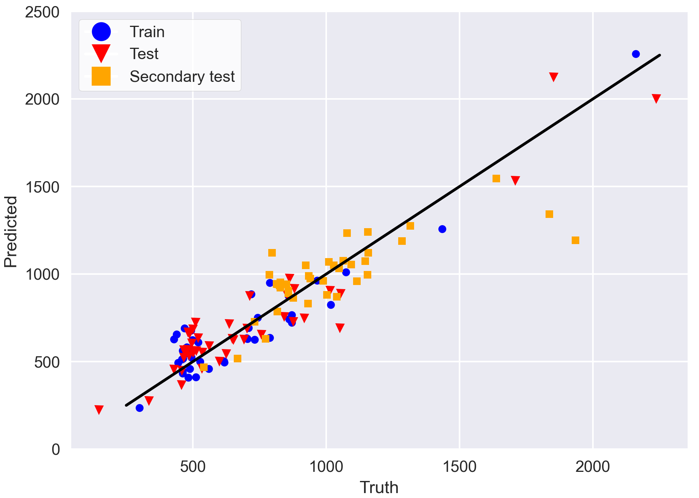

|
Sara Sameer I am a Research Engineer at Singapore Institute of Technology, where I work on knowledge-based deep learning models for battery analytics under the guidance of Prof. Wei Zhang. My research interests are desigining deep learning models for multivariate and irregularly sampled time-series data. Previously, I was a Machine Learning (ML) Intern at the University of California, Los Angeles, where I worked with Prof. Tan Minh Nguyen and industry partners from Toyota North America on building physics informed neural network for lifecycle prediction of Lithium-ion batteries.Before that, I completed my Bachelor's degree in Computer Science from FAST NUCES Karachi. Contact: sarasameer991 [at] gmail [dot] com |

|
NewsDec 2025 Our paper on PACE got accepted for oral presentation at ACM SAC 2026. Apr 2025 Our paper on Optimizing Cycle Life Prediction of Lithium-ion Batteries got accepted at TMLR. Mar 2025 Our paper on GiNet got accepted at IEEE VTC 2025. Aug 2024 Joined Singapore Institute of Technology as a Research Engineer. Jan 2024 Presented poster on Physics-Informed Model for Li-ion Batteries at Joint Mathematics Meetings (JMM) 2024. Jun 2023 Selected for summer research internship at UCLA under RIPS Program. |
Publications'*' denotes equal contribution |

|
Pace: Physics-Aware Attentive Temporal Convolutional Network for Battery Health Estimation
Sara Sameer*, Wei Zhang*, Kannan Dhivya Dharshini, Xin Lou, Qingyu Yan, Terence Goh, Yulin Gao ACM Symposium On Applied Computing (SAC), 2026 paper / code A lightweight deep learning ensemble model for efficient battery SoH monitoring for edge applications. |
|
|
GINET: Integrating Sequential and Context-Aware
Learning for Battery Capacity Prediction
Sara Sameer*, Wei Zhang*, Xin Lou, Qingyu Yan, Terence Goh, Yulin Gao IEEE Vehicular Technology Conference (VTC), 2025 paper / code / talk / slides A gated recurrent units enhanced Informer network for predicting battery's capacity using long-term dependencies in battery data. |
|

|
Optimizing Cycle Life Prediction of Lithium-ion Batteries via a Physics-Informed Model
Constantin-Daniel Nicolae, Sara Sameer, Nathan Sun, Karena Yan Transactions of Machine Learning Research (TMLR), 2025 Also presented at Joint Mathematics Meetings (JMM), 2024 paper / code / poster A hybrid approach combining a physics-based equation with a self-attention model to predict the cycle lifetimes of commercial Li-ion Batteries via early-cycle data. |
{kind=link}
|
Feel free to steal this website's source code. Do not scrape the HTML from this page itself, as it includes analytics tags that you do not want on your own website — use the github code instead. Also, consider using Leonid Keselman's Jekyll fork of this page. |